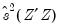
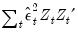
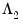
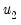
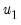
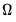

arch autoregressive conditional heteroskedasticity (ARCH and GARCH).
ardl autoregressive distributed lag models.
binary binary dependent variable models (includes probit, logit, gompit) models.
breakls least squares with breakpoints and breakpoint determination.
censored censored and truncated regression (includes tobit) models.
cointreg cointegrating regression using FMOLS, CCR, or DOLS, or panel FMOLS or DOLS.
count count data modeling (includes poisson, negative binomial and quasi-maximum likelihood count models).
did estimate a panel equation using the difference-in-difference estimator.
enet elastic net regression (including Lasso and ridge regression).
funcoef functional coefficients regression.
glm estimate a Generalized Linear Model (GLM).
gmm estimate an equation using generalized method of moments (GMM).
heckit estimate a selection equation using the Heckman ML or 2-step method.
liml estimate an equation using Limited Information Maximum Likelihood and K-class estimation.
logit logit (binary) estimation.
ls estimation using least squares or nonlinear least squares.
midas Mixed Data Sampling (MIDAS) regression.
ordered ordinal dependent variable models (includes ordered probit, ordered logit, and ordered extreme value models).
probit probit (binary) estimation.
qreg estimate an equation using quantile regression.
robustls robust regression (M-estimation, S-estimation and MM-estimation).
switchreg exogenous and Markov switching regression.
threshold threshold least squares, including threshold autoregression.
tsls estimate an equation using two-stage least squares regression.
varsel equation estimation using least squares with variable selection (uni-directional, stepwise, swapwise, combinatorial, Auto-GETS, Lasso).
abtest test for serial correlation in a panel GMM equation using the Arellano-Bond test.
archtest LM test for the presence of ARCH in the residuals.
arma Examine ARMA structure of estimated equation.
auto Breusch-Godfrey serial correlation Lagrange Multiplier (LM) test.
boundstest perform the Pesaran, Shin and Smith (2001) bounds test of long-run relationships from an ARDL estimated equation.
breakspec display the breakpoint specification for an equation estimated by least squares with breakpoints.
breaktest perform breakpoint test for TSLS and GMM equations.
cdtest test for the presence of cross-sectional dependence of errors in panel equations.
cellipse confidence ellipses for coefficient restrictions.
chow Chow breakpoint and forecast tests for structural change.
cinterval confidence interval for coefficients.
coefcov coefficient covariance matrix.
coeflabel display coefficients associated with variables in the equation.
coefmatrix display matrix of lambda and coefficients for elastic net, ridge, and Lasso models.
coefpath display graphs of the paths of the coefficients plotted against lambda, fit measures, and estimation values in elastic net, ridge, Lasso, and variable selection using Lasso models.
coint test for cointegration between series in an equation estimated using cointegrating regression.
cointgraph view a graph of the estimated cointegrating relation form of an ARDL estimated equation.
cointrel display information about the cointegrating relation specification and the coefficients in ARDL estimated equation.
cointrep view the estimated cointegration form and the long-run coefficients table of an ARDL estimated equation.
correl correlogram of the residuals.
correlsq correlogram of the squared residuals.
cvardecomp coefficient covariance decomposition table.
cvgraph display a graph of the cross-validation objective against the lambda path for elastic net, ridge, Lasso, and variable selection using Lasso models.
depfreq display frequency and cumulative frequency table for the dependent variable.
derivs derivatives of the equation specification.
didcs compute Callaway-Sant’Anna decomposition for difference-in-difference estimation.
didgbdecomp perform Goodman-Bacon decomposition for difference-in-difference estimation.
didtrends show difference-in-difference trends summary in graphical or tabular form.
display display table, graph, or spool in object window.
dynmult compute dynamic multipliers for long-run regressors in ARDL equations.
ecresults display the conditional error correction (CEC) and error correction (EC) regression results.
effects display table of estimated fixed and/or random effects.
endogtest perform the regressor endogeneity test.
facbreak factor breakpoint test for stability.
resoutliers detect outliers in the residuals or regressors of the equation.
fixedtest test significance of estimates of fixed effects for panel estimators.
funbias functional coefficients equation bias results.
funbw functional coefficients equation bandwidth results.
funci functional coefficients equation coefficient confidence intervals.
funcov functional coefficients covariance results.
funtest perform functional coefficients hypothesis and stability tests.
garch conditional standard deviation graph (only for equations estimated using ARCH).
grads examine the gradients of the objective function.
hettest test for heteroskedasticity.
hist histogram and descriptive statistics of the residuals.
icgraph display a graph of the selection criteria for the top 20 models observed as part of model selection during estimation.
ictable display a table of the log-likelihood and selection criteria for the top 20 models observed as part of model selection during estimation.
infbetas scaled difference in estimated betas for influence statistics.
instsum show a summary of the equation instruments.
label label information for the equation.
lambdacoefs display the spreadsheet of the matrix of coefficient values along the lambda path in elastic net, ridge, Lasso, and variable selection using Lasso models.
lambdaest display the table showing various values associated with estimation along the lambda path in elastic net, ridge, Lasso, and variable selection using Lasso models.
lambdafit display the table showing various fit statistics associated with estimates along the lambda path in elastic net, ridge, Lasso, and variable selection using Lasso models.
lambdapath display graphs of lambda against various fit and estimation measures in elastic net, ridge, Lasso, and variable selection using Lasso models.
means descriptive statistics by category of the dependent variable (only for binary, ordered, censored and count equations).
modselgraph display a graph of the selection criteria for the top 20 models for elastic net, ridge, Lasso, and variable selection using Lasso models.
modseltable display a table of the selection criteria and measures associated with the estimation and model selection of elastic net, ridge, Lasso, and variable selection using Lasso models.
multibreak perform multiple breakpoint testing for an equation specified by list and estimated by least squares.
newsimpact display a news-impact graph of equations estimated using GARCH.
nyblom perform the Nyblom test of parameter stability or structural change in equations estimated using GARCH.
orthogtest perform the instrument orthogonality test.
outliers display the outliers summary view for an equation estimated via least squares with automatic outlier indicator saturation.
output table of estimation results.
pmghausmantest displays a spool object with the results of the Hausman test for similarity against mean-group and dynamic fixed effects estimators in PMG estimation.
predict prediction (fit) evaluation table (only for binary and ordered equations).
qrcrprocess displays a spool object producing a quantile process of the cointegrating relation.
qrecprocess displays a spool object producing a quantile process for each of the conditional error correction and error correction coefficients.
qrprocess display table or graph of quantile process estimates.
qrslope test of equality of slope coefficients across multiple quantile regression estimates.
qrsymm test of coefficients using symmetric quantiles.
ranhaus Hausman test for correlation between random effects and regressors.
rcomptest tests for the presence of cross-sectional or time random components in a panel equation. estimated using pooled least squares.
reset Ramsey’s RESET test for functional form.
resids display, in tabular form, the actual and fitted values for the dependent variable, along with the residuals.
resoutliers Detect outliers in the residuals or regressors of the equation.
results table of estimation results.
rgmprobs display the regime probabilities in a switching regression equation.
rls recursive residuals least squares (only for non-panel equations estimated by ordinary least squares, without ARMA terms).
signbias perform the Sign bias test (Engle and Ng, 1993) of misspecification in equations estimated using GARCH.
similarity compute Hausman tests for Pooled mean group ARDL equations.
srcoefs displays a spool object with the results of error-correction regressions for each cross-section in PMG estimation.
strconstant tests for constancy of the base specification coefficients against a smoothly varying alternative in a smooth threshold regression.
strlinear compute tests for linearity of the base specification against the smooth threshold alternative in a smooth threshold regression.
strnonlin compute various tests for additional additive or encapsulated nonlinearity in a smooth threshold regression.
strwgts compute and display the transition weights in a smooth threshold regression.
symmtest compute symmetry test for nonlinear distributed lag variables in nonlinear ARDL models.
testadd likelihood ratio test for adding variables to equation.
testdrop likelihood ratio test for dropping variables from equation.
testfit performs Hosmer and Lemeshow and Andrews goodness-of-fit tests (only for equations estimated using binary).
transprobs display the state transition probabilities in a switching regression equation.
ubreak Andrews-Quandt test for unknown breakpoint.
varinf display Variance Inflation Factors (VIFs).
wald Wald test for coefficient restrictions.
weakinst display the weak instruments summary.
white White test for heteroskedasticity.
clearhist clear the contents of the history attribute.
copy creates a copy of the equation.
didmakeeq create an equation object with the underlying fixed-effects estimation of a difference-in-difference equation.
makecoint Create a series containing the estimated cointegrating relationship from an ARDL estimated equation.
makederivs make group containing derivatives of the equation specification.
makefunobj save coefficients, residuals, bias, variance, and confidence intervals for functional coefficients equations.
makegarch create conditional variance series (only for ARCH equations).
makegrads make group containing gradients of the objective function.
makelimits create vector of estimated limit points (only for ordered models).
makemodel create model from estimated equation.
makeregs make group containing the regressors.
makergmprobs save the regime probabilities in a switching regression equation.
makeresids make series containing residuals from equation.
makestrwgts save the smooth transition weights in a smooth threshold regression.
maketransprobs save the state transition probabilities in a switching regression equation.
olepush push updates to OLE linked objects in open applications.
setattr set the value of an object attribute.
setpilotbw compute and set the value of the local pilot bandwidth (for functional coefficients equations).
updatecoefs update coefficient vector(s) from equation.
@aic Akaike information criterion.
@bylist returns 1 or 0 depending on whether the equation was estimated by list.
@deviance deviance (for Generalized Linear Models).
@deviancestat deviance statistic: deviance divided by degrees-of-freedom (for Generalized Linear Models).
@df degrees-of-freedom for equation.
@dispersion estimate of dispersion (for Generalized Linear Models).
@dw Durbin-Watson statistic.
@finalbw returns the final bandwidth used in functional coefficient estimation.
@fixeddisp indicator for whether the dispersion is a fixed value (for Generalized Linear Models).
@fprob probability value of the
F-statistic.
@hacbw bandwidth for HAC estimation of GMM weighting matrix or long-run covariance in cointegrating regression (if applicable).
@hq Hannan-Quinn information criterion.
@instrank rank of instruments (if applicable).
@jstat J-statistic — value of the GMM objective function (for GMM and TSLS).
@jprob probability value of the
J-statistic.
@lambdamin minimum lambda value from ENET cross-validation.
@limlk estimate of LIML

(if applicable).
@logl value of the log likelihood function.
@lrprob probability value of likelihood ratio statistic (if applicable).
@lrstat likelihood ratio statistic (if applicable).
@lrvar long-run variance estimate for cointegrating regression (if applicable).
@meandep mean of the dependent variable.
@nbreaks number of breaks in breakpoint least squares and thresholds in threshold regression.
@nclusters number of clusters used in computing cluster robust covariances.
@ncoef number of estimated coefficients.
@ncross number of cross-sections used in estimation (equal to 1 for non-panel workfiles).
@npers number of workfile periods used in estimation (same as
@regobs for non-panel workfiles).
@nregimes number of regimes in a switching and breakpoint regression.
@nthresholds number of thresholds in threshold regression.
@ntreatment difference-in-difference number of cross sections receiving treatment.
@objective quasi-likelihood objective function (if applicable).
@pearsonssr Pearson sum-of-squared residuals (for Generalized Linear Models).
@pearsonstat Pearson statistic: Pearson SSR divided by degrees-of-freedom (for Generalized Linear Models).
@pilotbw returns the pilot bandwidth used in functional coefficient estimation.
@qlrprob probability value of quasi-likelihood ratio statistic (if applicable).
@qlrstat quasi-likelihood ratio statistic (if applicable).
@quantdep quantile of dependent variable (for quantile regression).
@rbar2 adjusted R-squared statistic.
@rdeviance restricted (constant only) deviance (for Generalized Linear Models).
@regobs number of observations in regression.
@rlogl restricted (constant only) log-likelihood (if applicable).
@rn2 Rn-squared statistic.
@robf robust
F-statistic (Wald-test form).
@robfprob robust
F-statistic (Wald-test form)
p-value.
@robjective restricted (constant only) quasi-likelihood objective function (if applicable).
@sddep standard deviation of the dependent variable.
@se standard error of the regression.
@sparsity estimate of sparsity (for quantile regression).
@ssr sum of squared residuals.
@thresholds number of thresholds (for threshold regression).
@tstats(i) t-statistic or
z-statistic value for coefficient
i.
@wmeandep weighted mean of dependent variable (if applicable).
@wgtscale scaling factor for weights (if applicable).
c(i) i-th element of default coefficient vector for equation (if applicable).
@ardlceccoefs returns a vector of coefficient estimates from the conditional error-correction (CEC) regression in univariate (N)ARDL estimation.
@ardleccoefs returns a vector of coefficient estimates from the traditional error-correction (EC) regression in univariate (N)ARDL estimation.
@ardlcoint returns a coef containing coefficients from the cointegrating relationship form of an ARDL estimation.
@ardllrcoefs returns a coef containing coefficients from the long run relationship form of a non-panel ARDL estimation.
@ardlsrcoefs returns a matrix where each row corresponds to an individual cross-section’s short-run coefficients. Only applicable for PMG/ARDL estimation.
@ardlsrses returns a matrix where each row corresponds to an individual cross-section’s short-run coefficient standard errors. Only applicable for PMG/ARDL estimation.
@coefcov covariance matrix for coefficient estimates.
@contempcov symmetric matrix containing the contemporaneous covariance

for cointegrating regression residuals estimated with CCR.
@cvconverge Elastic net path cross-validation convergence test values (lambda values in rows; lambda in first column, training-test sample results in remaining columns).
@cvisvalid Elastic net path cross-validation valid results indicators (lambda values in rows; lambda in first column, training-test sample results in remaining columns).
@cviters Elastic net path cross-validation iterations (lambda values in rows; lambda in first column, training-test sample results in columns).
@cvobjective Elastic net path cross-validation objective values (lambda values in rows; lambda in first column, training-test sample results in remaining columns).
@effects vector of fixed and random effects estimates (if applicable).
@fcgrid returns a vector of unique grid values over which functional coefficients are evaluated in functional coefficient estimation.
@initprobs matrix containing initial probabilities for switching regression equations.
@instwgt symmetric matrix containing the final sample instrument weighting matrix used during GMM or TSLS estimation (
e.g.,  for 2SLS and  for White weighting).
@lambdacoefs Elastic net lambda path coefficients matrix (lambda values in rows; variables in columns). Full set of variables including those with zero coefficients along the path.
@lambdaest Elastic net lambda path estimation measures matrix (lambda values in rows; columns contain the lambda values, number of non-zero coefficients, estimation objective, sums-of-squares portion of the objective,

portion of the objective,

portion of the objective).
@lambdafit Elastic net lambda path fit measures matrix (lambda values in rows; columns contain the lambda values, number of non-zero coefficients, R-squared, adjusted R-squared, and sums-of-squared residuals).
@lambda2cov symmetric matrix  containing the long run covariances of  with  and for cointegrating regression equations estimated with CCR and FMOLS.
@lrcov symmetric matrix containing the long-run covariance  for cointegrating regression equations estimated with CCR and FMOLS.
@modselresults Elastic net path model selection summary (lambda values in rows; lambda in first column, followed by model selection objective, number of non-zero coefficients, and the fit statistics (sum-of-squared residuals, mean-square error, R-squared, and adjusted R-squared) associated with the estimated model.
@pmgcxcoefs returns a matrix of coefficient estimates from the error-correction regressions for each cross-section in PMG estimation. Each column corresponds to a single cross-section and each column corresponds to a coefficient estimate from the traditional error-correction regression, in order of appearance.
@pmgcxses returns a matrix of coefficient standard error estimates from the error-correction regressions for each cross-section in PMG estimation. Each column corresponds to a single cross-section and each column corresponds to a coefficient standard error estimate from the traditional error-correction regression, in order of appearance.
@pmglrcoefs returns a vector of long-run (pooled) coefficient estimates in PMG estimation.
@pmgsrcoefs returns a vector of short-run (mean-group) coefficient estimates in PMG estimation.
@pvals vector containing the coefficient probability values.
@stderrs vector of standard errors for coefficients.
@thresholds vector of threshold values for threshold estimation.
@tstats vector of
t-statistic or
z-statistic values for coefficients.
@ardlcointsubst returns string representation of the cointegration form of an ARDL equation with substituted coefficients.
@attr("arg") string containing the value of the
arg attribute, where the argument is specified as a quoted string
.
@breaks string representation of the breakpoints in breakpoint least squares or thresholds in threshold regression.
@coeflabels coefficient labels used in regression output table.
@coeflist returns a string containing a space delimited list of the coefficients used in estimation (
e.g., “C(1) C(2) C(3)”). This function always returns the list of actual coefficients used, irrespective of whether the original equation was specified by list or by expression.
@command full command line form of the estimation command. Note this is a combination of
@method,
@options and
@spec.
@depends string containing a list of the series in the current workfile on which this equation depends.
@description string containing the Equation object’s description (if available).
@displayname returns the equation’s display name. If the equation has no display name set, the name is returned.
@esteq returns string representation of the estimation equation.
@extralist space delimited list of the equation's extra regressors. For equation's estimated by ARCH,
@extralist contains the variance equation terms. For equations estimated by CENSORED, this contains the error distribution terms. For all other equation methods it returns an empty string.
@instlist space delimited list of the equation instruments (if applicable).
@method command line form of estimation method (“ARCH”, “LS”,
etc....).
@name returns the name of the Equation.
@options command line form of estimation options.
@remarks string containing the equation object’s remarks (if available).
@smpl description of the sample specified for estimation.
@spec original equation specification. Note this will be different from
@varlist if the equation specification contains groups, or is specified by expression.
@subst returns string representation of the equation with substituted coefficients.
@type returns a string with the object type: “EQUATION”.
@updatetime returns a string representation of the time and date at which the equation was last updated.
@varlist space delimited list of the equation’s dependent variable and regressors if the equation was specified by list, or the equation’s underlying variables (both dependent and independent) if the equation was specified by expression.
@varselkept space delimited list of variables kept by model selection.
@varselrejected space delimited list of the variables dropped by model selection.
The fitted values from EQ01 may be saved using,
You can save the t-statistics and covariance matrix for your parameter estimates: